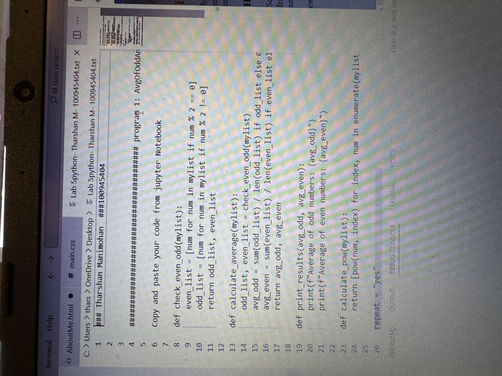

About Me
My name is Tharshan Manimohan and I am a second year student at Ontario Tech University. I am in the program Networking and IT security. My most favourite courses I did from last year was networking, and also Object Oriented Programming. I want to join more clubs and also network with more people as I am entering my second year. .
Hobbies
Some of the things I enjoy to do in my freetime are play video games like Valorant, Gta 5, Call of Duty, etc. Most of the time, when I am with my friends we enjoy playing basketball, and also the nba and nfl. I enjoy going on vacation with my family as we go to a different country every summer and learn about new things.
For more informatation, Contact me at tharshan.manimohan@ontariotechu.net© 2024 by Tharshan Manimohan